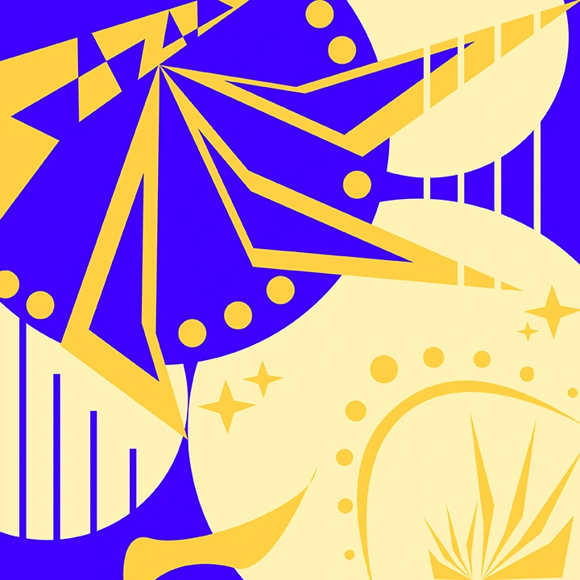
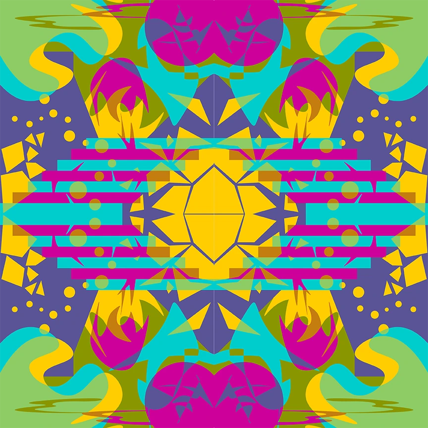

One Like Two
- Worked on making yellow appear like two different colors with popping complementary colors.
- Explored and manipulated shapes in Adobe Illustrator to create illusions of complex designs through layering.

Two Like One
- Worked on making two colors appear like one color with analogous colors.
- Explored and manipulated tools such as Curvature in Adobe Illustrator to create an aesthetically pleasing landscape.

Illusion of Transparency
- Worked on making two colors appear like one color with analogous colors.
- Explored and manipulated shapes and tools such as Curvature and Pathfinder in Adobe Illustrator to create an aesthetically pleasing landscape.
Notan
- Created a notan with organic and geometric shapes from through inspirations from the movie Pleasantville.
- Used Mi-Teintes Black Paper, Best-Test Paper Cement, Grafix Rubber Cement Pick-Up, and X-Acto knife to create it.
Photoshop
- Utilized Adobe Photoshop's many selection tools and other effects to integrate a motif and a building into one.

The Cat Zodiac
- A recreation of the 12 zodiac signs of western astrology through the idea human similarities to cat characteristics.
- Focused on coding in JavaScript using VSCode to make an interactive desktop website for users to enjoy.